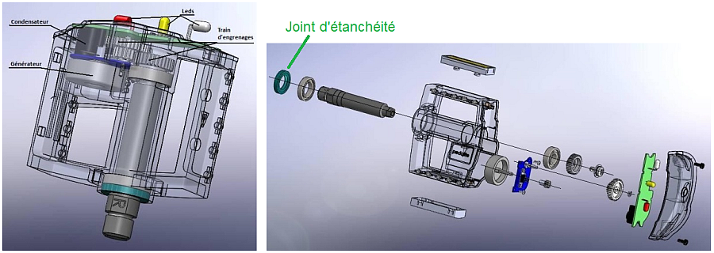

Principe de fonctionnement
La pédale lumineuse KPL200 utilise la génération d’un courant électrique grâce à l’énergie produite par le cycliste lors du pédalage. Une génératrice logée à l’intérieur du corps de la pédale est entraînée par l’intermédiaire d’un multiplicateur qui augmente la fréquence de rotation du rotor par rapport à celle de l’axe. L'énergie électrique ainsi produite est prise en charge par une carte électronique qui va faire clignoter des diodes électroluminescentes et stocker le surplus dans un élément de stockage. Lorsque la pédale n'est plus en mouvement, c'est l'énergie stockée qui prend le relais pendant une durée supérieure à 5 minutes.

Éclatés de la pédale lumineuse KPL200
Created with the Personal Edition of HelpNDoc: Easy EBook and documentation generator